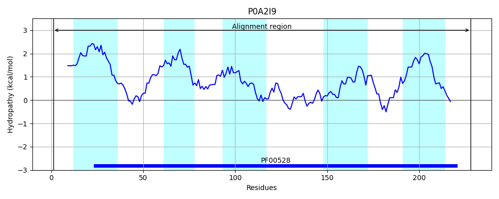
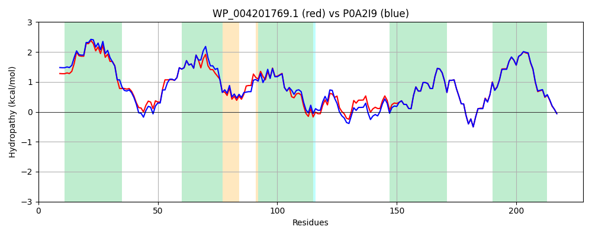

Hit Accession: P0A2I9
Hit TCID: 3.A.1.3.1
Hit Description: gnl|BL_ORD_ID|8552 gnl|TC-DB|P0A2I9|3.A.1.3.1 Histidine transport system permease protein hisQ - Salmonella typhimurium.
Mach Len: 228
e:0.000000
Query TMS Count : 5
Hit TMS Count: 5
TMS-Overlap Score: 5.800000
Predicted Substrates:CHEBI:25094;lysine, CHEBI:7784;ornithine, CHEBI:2643;arginine, CHEBI:5733;histidine
BLAST Alignment:
Score: 1042 , Bit scores: 405 bits, E-value: 5.2e-146, Alignment length: 228, Percentage identity: 90
Query: 1 MLYGFSQVILQGALVTLELALSSVVLAVLIGLAGAGAKLSSNRPLALVFEGYTTLIRGVPDLVLMLLIFYGLQIALNSVTDALGMAQFDIDPMIAGIITLGFIYGAYFTETFRGAYLAVPKGHIEAATAFGFSGGQTFRRILFPAMMRYALPGIGNNWQVILKATALVSLLGLEDVVKATQLAGKSTWQPFYFAIVCGLIYLVFTTLSNGVLLLLERRYTVGVKRADL 228
MLYGFS VILQGA+VTLELALSSVVLAVLIGL GAGAKLS NR L+FEGYTTLIRGVPDLVLMLLIFYGLQIALN VTD+LG+ Q DIDPM+AGIITLGFIYGAYFTETFRGA++AVPKGHIEAATAFGF+ GQTFRRI+FPAMMRYALPGIGNNWQVILKATALVSLLGLEDVVKATQLAGKSTW+PFYFA+VCGLIYLVFTT+SNGVLLLLERRY+VGVKRADL
Sbjct: 1 MLYGFSGVILQGAIVTLELALSSVVLAVLIGLVGAGAKLSQNRVTGLIFEGYTTLIRGVPDLVLMLLIFYGLQIALNVVTDSLGIDQIDIDPMVAGIITLGFIYGAYFTETFRGAFMAVPKGHIEAATAFGFTHGQTFRRIMFPAMMRYALPGIGNNWQVILKATALVSLLGLEDVVKATQLAGKSTWEPFYFAVVCGLIYLVFTTVSNGVLLLLERRYSVGVKRADL 228 | Protein Hydropathy Plots: |
|---|
 |  |
Pairwise Alignment-Hydropathy Plot:
|
|---|
|  |